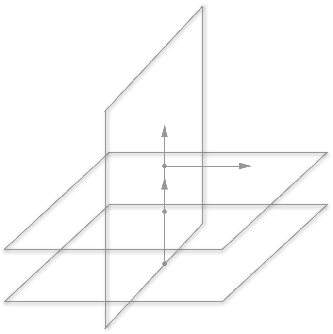
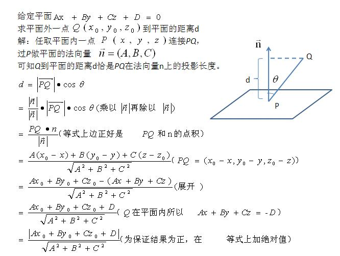

前言
本文讲解平面的基本概念，并通过编程构建平面的数据结构。
平面及其方程
数学上，一个平面（plane）就是基本的二维对象。它可以视为一个平坦的拥有无穷大面积的纸。多数几何、三角学和制图的基本工作都在二维平面上进行。可以由以下条件确定唯一平面。
- 三个不共线的点
- 一条直线和线外一点
- 一个点和一条垂直于平面的直线
- 两条相交的直线
- 两条平行的直线
在三维直角坐标系中，一张平面可以由平面上一点与该平面的一枚法向量确定。法向量是与该平面垂直的向量。知道平面上一点与该平面的一枚法向量，我们就可以写出该平面的点法式方程。
$$ \begin{align} A(x - x_{0}) + B(y - y_{0}) + C(z - z_{0}) &= 0 \\ P_{0} &= (x_{0}, y_{0}, z_{0}) \\ \overrightarrow{v} &= \begin{bmatrix} A \\ B \\ C \end{bmatrix} \end{align} $$将平面的点法式方程展开，我们就得到平面的一般式方程。
$$ \begin{align} A(x - x_{0}) + B(y - y_{0}) + C(z - z_{0}) &= 0 \\ Ax + By + Cz +\underbrace{(-Ax_{0} - By_{0} - Cz_{0})}_{D} &= 0 \\ Ax + By + Cz +D &= 0 \end{align} $$平面的另一种表示形式是截距式方程，它表示出平面在三个坐标轴上的截距，对于作图会有帮助，平面的截距式方程也很容易改写成一般式方程。
$$ \begin{align} \frac{x}{a} + \frac{y}{b} + \frac{z}{c} &= 1 \\ \frac{1}{a} x + \frac{1}{b} y + \frac{1}{c} z - 1 &= 0 \end{align} $$这里列出几个特殊的平面方程。
| 平面与坐标轴位置关系 | 平面方程 |
|---|---|
| 过原点$(0, 0, 0)$ | $D=0$ |
| 平行$x$轴 | $A=0$ |
| 平行$y$轴 | $B=0$ |
| 平行$z$轴 | $C=0$ |
| 过$x$轴 | $A=0, D=0$ |
| 过$y$轴 | $B=0, D=0$ |
| 过$z$轴 | $C=0, D=0$ |
表1: 特殊平面的方程
平面的位置关系
了解了平面及其方程后，我们来考虑平面之间的位置关系。我们可以使用平面的法向量帮助我们判定平面的位置关系。如果两平面法向量平行（对应坐标成比例），那么这两平面平行；如果两平面法向量垂直，那么两平面垂直。两向量的位置关系可以使用向量的数量积与向量积求得。
| 平面位置关系 | 法向量关系 | 二面角 |
|---|---|---|
| 平行 | $ \overrightarrow{v} \times \overrightarrow{w} = 0 $ | $/$ |
| 垂直 | $ \overrightarrow{v} \cdot \overrightarrow{w} = 0 $ | $\frac{\pi}{2}$ |
| 相交 | $ \overrightarrow{v} \cdot \overrightarrow{w} \not = 0 $ | $\theta$ |
表2: 平面位置关系

图1: 平面位置关系
如果两平面不平行，我们就可以利用法向量的数量积求出二面角。
$$ \begin{align} plane_{1}&: a_{1}x + b_{1}y + c_{1}z + d_{1} = 0 \\ plane_{2}&: a_{2}x + b_{2}y + c_{2}z + d_{2} = 0 \\ \theta &= \arccos( \frac { \vert \overrightarrow{v} \cdot \overrightarrow{w} \vert} { \lVert \overrightarrow{v} \rVert \cdot \lVert \overrightarrow{w} \rVert } ) \\ &= \arccos( \frac{ a_{1} \cdot a_{2} + b_{1} \cdot b_{2} + c_{1} \cdot c_{2} } { \sqrt{ a_{1}^{2} + b_{1}^{2} + c_{1}^{2} } \cdot \sqrt{ a_{2}^{2} + b_{2}^{2} + c_{2}^{2} } }) \end{align} $$点到平面的距离
求一点到平面的距离，我们也可以使用法向量计算。平面外一点到平面的距离是其在一法向量上的投影长度。

$$ \begin{align} P&: (x_{0}, y_{0}, z_{0}) \\ plane&: Ax + By + Cz + D = 0 \\ d &= \frac{ \vert Ax_{0} + By_{0} + Cz_{0} + D\vert } { \sqrt{A^{2} + B^{2} + C^{2} } } \end{align} $$图2: 点到平面距离的推导过程
两平行平面的距离
将点到直线距离公式推广一下，我们就可以得到两平行平面之间的距离公式。
$$ \begin{align} plane_{1}&: Ax + By + Cz + D_{1} = 0 \\ plane_{2}&: Ax + By + Cz + D_{2} = 0 \\ d&=\frac { \vert D_{1} - D_{2} \vert }{ \sqrt{A^{2} + B^{2} + C^{2} } } \end{align} $$